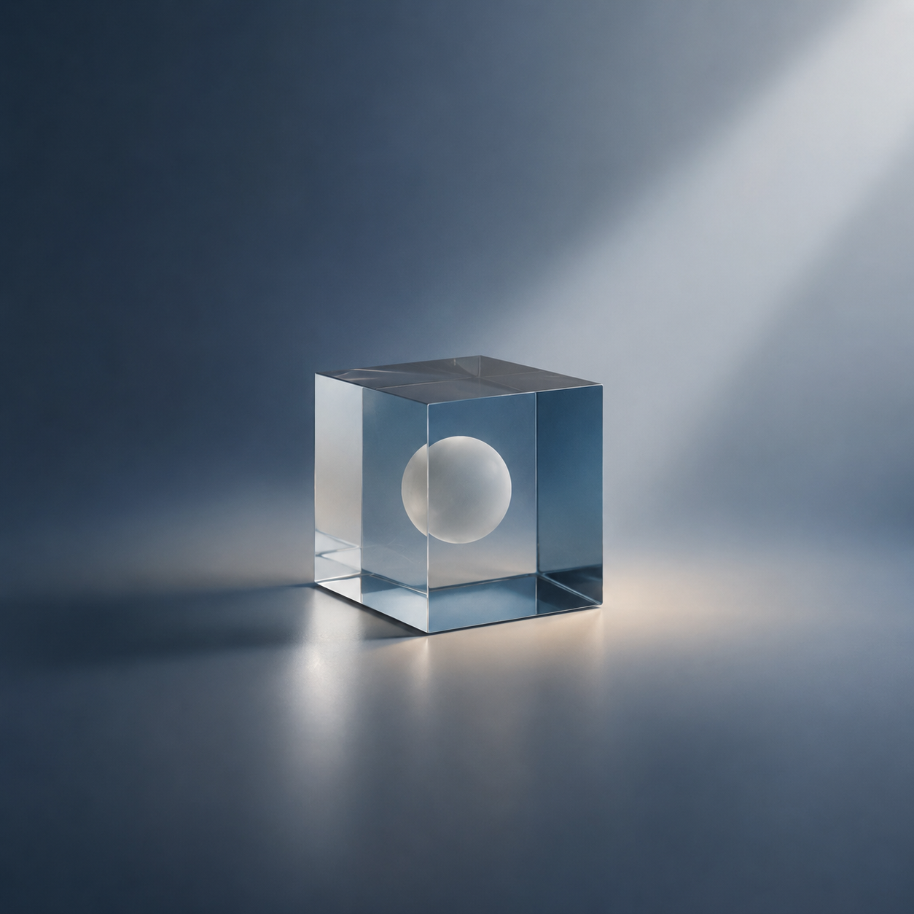
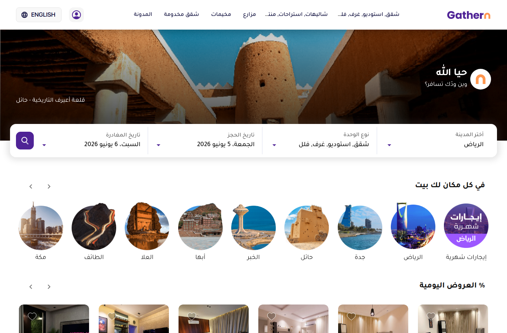

استوديو العروض
فلنأخذ جولة تكشف لك سحر هذه العروض وما تقدر عليه: كيف تتنقّل، وتترك ملاحظاتك، وتصحّح — بالأدوات نفسها التي سأبني بها كلّ عرضٍ لك.
اضغط → للبدء.
التنقّل
٠١
نصوص، وقوائم، وأرقام كبيرة، ورسوم — كلّها مجرّد HTML.
الشرائح تعرض بيانات حيّة
بيانات تجريبية تتغيّر كلّما عدت إلى هذه الشريحة. الشريحة مجرّد HTML، فيمكنها أن تحوي رسومًا وأرقامًا ومخطّطات — أيّ شيء يرسمه المتصفّح.
واتّجاهات عبر الزمن
الفكرة ذاتها بشكلٍ مختلف — نقاط عشوائية في كلّ زيارة. وحين تطلب عرضًا، أرسم رسومًا كهذه من أرقامك الحقيقية.
أو الأرقام البارزة وحدها
الأرقام تَعدّ صعودًا كلّما فتحت الشريحة — وهي للتوضيح فقط؛ عروضك تستخدم أرقامك الحقيقية.
اختبار خاطف

And English too
The same deck speaks English too — one presentation can mix both languages, slide by slide.
تفاعليّة بلا حدود
حرّك الفأرة هنا… وانقر. 🔊
حركةٌ وصوتٌ وألوان — الشريحة صفحة ويب كاملة، تتفاعل ولا تُعرض فحسب. (ارفع صوت جهازك.)
✦
أجملُ العروض لا تُعرَض… تُروى. وأكثرُ ما يَعلَق في الذاكرة لحظةٌ خاطفةٌ تُدهِش، فيلتفت الجمهور ويعيش القصّة معك.
ولِمَ الحكاية؟
«لَقَدْ كَانَ فِي قَصَصِهِمْ عِبْرَةٌ لِأُولِي الْأَلْبَابِ»
سورة يوسف · الآية ١١١
حتى الوحيُ اختار القصّة لتبلغ القلوب، وسمّى اللهُ أجملَها «أحسنَ القصص». فإن أردتَ لكلامك أن يَرسخ، فاحكِه قصّة — وهذه خمسُ لحظاتٍ تُحييها.
١ · أرِهم، لا تُخبرهم

بدل أن تصف، دَع جمهورك يلمس الشيء نفسه حيًّا أمامه — تصفّحه معهم. لحظةُ «انظروا!» تبقى في القلب أطول من ألف كلمة.
٢ · لحظة دهشة
بعض الأفكار أكبر من أن تُقال — تحتاج أن تُرى وتُلمَس. أدِر الكوكب، وتابِع الرحلة تنطلق من الرياض إلى العالم.
٣ · دَعهم يرون المستقبل
الأرقام وحدها تُنسى؛ أمّا أن يرى الناس حلمهم يكبر مع كلّ حركة — فتلك قصّةٌ يعيشونها. (أرقام للتوضيح.)
٤ · خُذهم إلى المكان
حرّك الخريطة وكبّرها، فكأنّكم هناك الآن. القصّة التي تُعاش أصدق من القصّة التي تُحكى.
٥ · اصنع جوًّا
قبل الكلمة… المزاج.
الأجواء تهيّئ القلوب قبل أن تنطق. حرّك الفأرة، ودَع اللحظة تتنفّس.
لنكسر الجمود ✨
اقرأ العبارة بصوتٍ عالٍ، ودَع الجميع يصوّت: حقيقةٌ أم خيال؟ ثم اكشف الإجابة — والطُّرفة في التفسير.
أخبرني بما أغيّر
صحّح الصغائر بنفسك
عند الجاهزية
اضغط F فتختفي أدوات المراجعة.
ما راجعته هو ما تعرضه — وما تصدّره ملفّ PDF.
٠٢
الآن لنصنع عرضك أنت.
الطريقة
اجعلها على هويّتك
theme.css — لا حاجة لتعديله بنفسك.حدّثني عن أوّل عرضٍ لك، وسأبدأ على الفور.